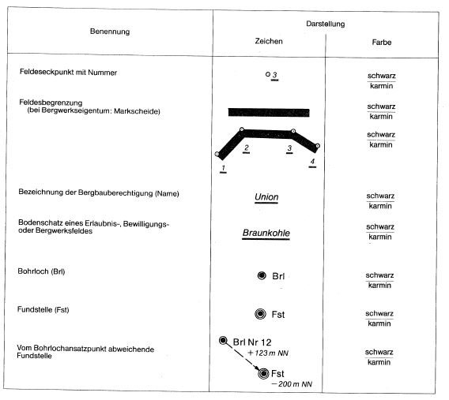

Bergverordnung über vermessungstechnische und sicherheitliche Unterlagen (Unterlagen-Bergverordnung - UnterlagenBergV) Anlage(zu § 1) Zeichen, Farben und Beschriftungen für Karten und Lagerisse der Bergbauberechtigungen
(Fundstelle: BGBl I 1982, 1557)
Beantragte Felder
1.
Ausführung

2.
Anwendung
Bei Änderung von Bergbauberechtigungen ist die bisherige Bezeichnung in der Farbe karmin durchzustreichen. Die Feldesbegrenzung (Markscheide) ist durch schrägliegende Kreuze in der Farbe karmin ungültig zu machen.
Der Name des Bodenschatzes ist möglichst auszuschreiben. Aus Platzgründen können auch Kurzbezeichnungen entsprechend dem Periodischen System der Elemente benutzt werden.